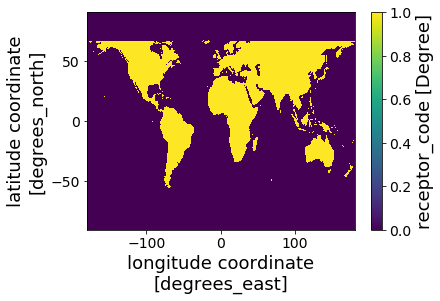
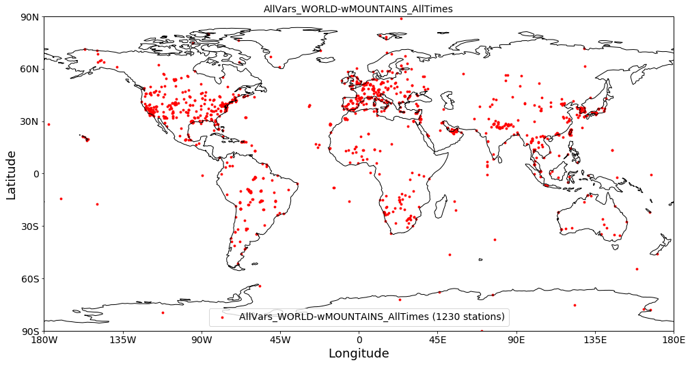
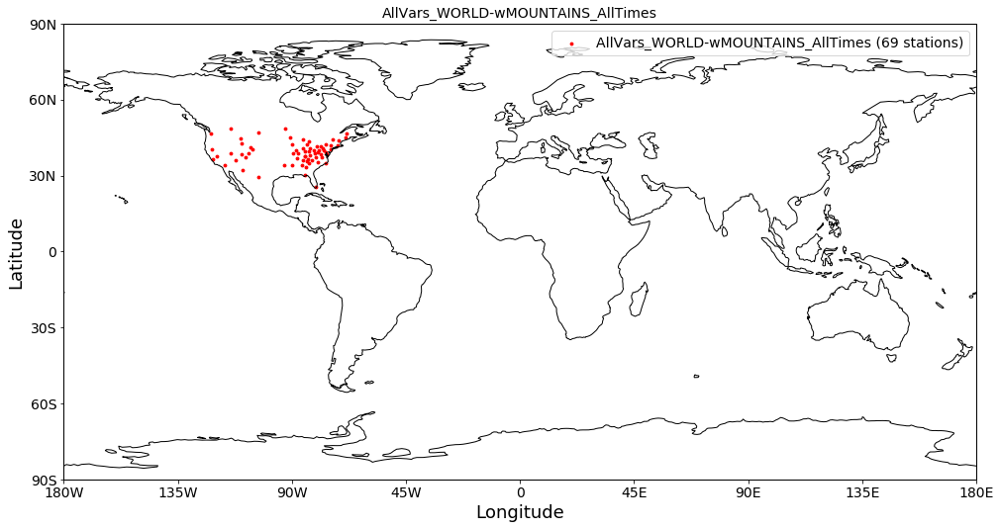
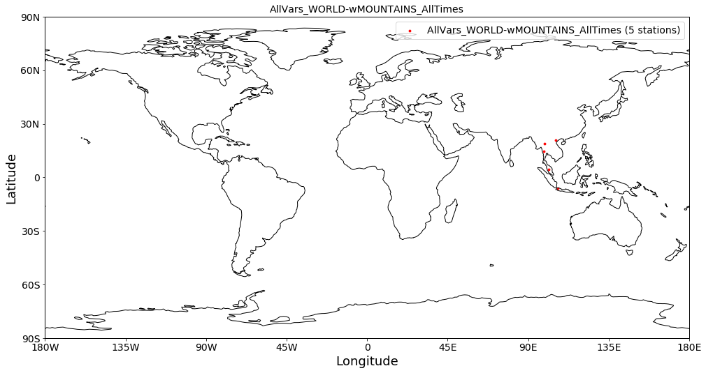
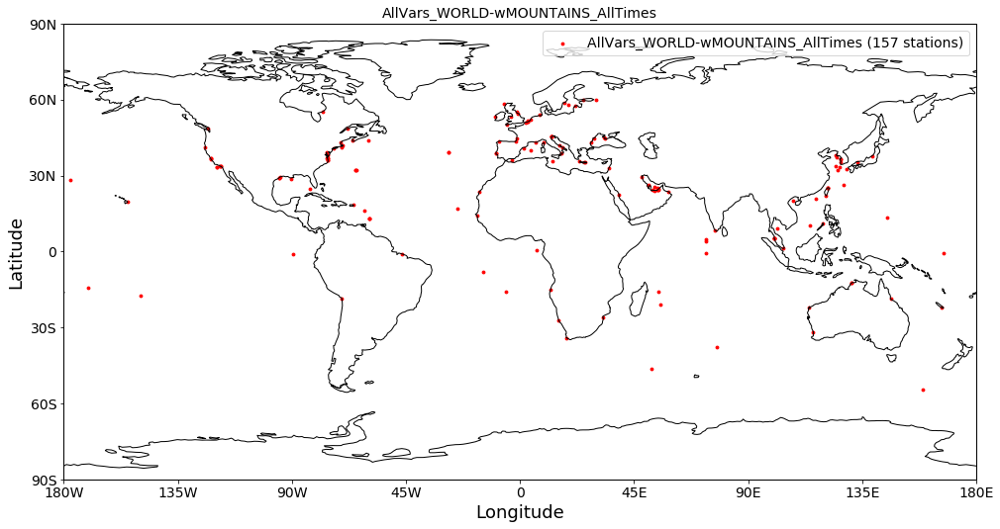
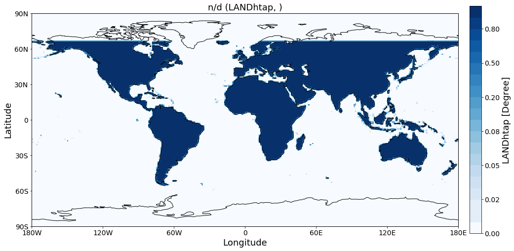
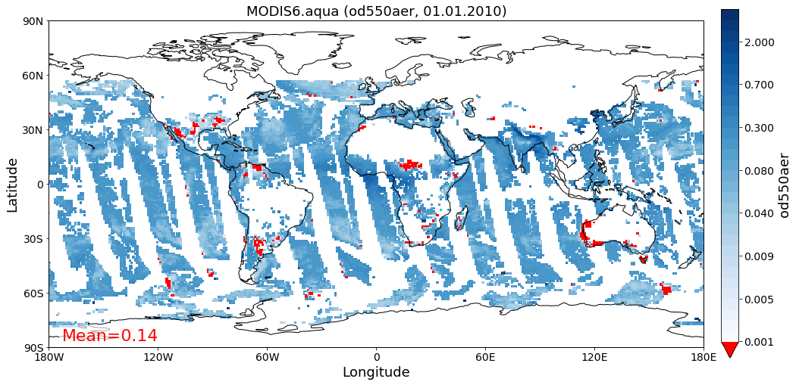

[1]:
import xarray as xr
import os
import pyaerocom as pya
import cartopy.feature as cfeature
import numpy as np
import matplotlib.pyplot as plt
import matplotlib.patches as mpatches
import cartopy.crs as ccrs
import glob
import pyaerocom as pya
import iris
[2]:
path = '//home/hannas/Desktop/htap/'
files = glob.glob(path + '*0.1*.nc')
[3]:
# files
[3]:
from pyaerocom import const
[5]:
# const.LANDSEA_MASK
[4]:
def load_region_mask(region_id='PANhtap'):
"""
Returns
---------
xarray.DataArray containing the masks.
"""
path = '//home/hannas/Desktop/htap/' # get from config
fil = glob.glob(path + region_id + '*0.1*.nc')[0]
# print(fil)
masks = xr.open_dataset(fil)
return masks[region_id]
[5]:
mask = load_region_mask(region_id='LANDhtap')
example_mask = load_region_mask(region_id='LANDhtap')
[6]:
mask.plot()
[6]:
<matplotlib.collections.QuadMesh at 0x7fdaf6281da0>

[7]:
def available_region_htap_mask():
arr = []
path = '//home/hannas/Desktop/htap/'
files = glob.glob(path + '*0.1*.nc')
for fil in files:
arr.append(os.path.basename(fil).split('.')[0])
return arr
[8]:
available_region_htap_mask()
[8]:
['PANhtap',
'EAShtap',
'NAFhtap',
'MDEhtap',
'LANDhtap',
'SAShtap',
'SPOhtap',
'OCNhtap',
'SEAhtap',
'RBUhtap',
'EEUROPEhtap',
'NAMhtap',
'WEUROPEhtap',
'SAFhtap',
'USAhtap',
'SAMhtap',
'EURhtap',
'NPOhtap',
'MCAhtap']
[9]:
# pya.io.ReadUngridded.read?
[10]:
YEAR = 2010
VAR = "od550aer"
TS_TYPE = "daily"
MODEL_ID = "ECMWF_CAMS_REAN"
OBS_ID = 'AeronetSunV3Lev2.daily'
#OBS_ID = 'GAWTADsubsetAasEtAl'
#VAR = 'concso2'
obs_reader = pya.io.ReadUngridded(datasets_to_read=OBS_ID, vars_to_retrieve = VAR)
read_data = obs_reader.read()
#bs_data = obs_reader
/home/hannas/Desktop/pyaerocom/pyaerocom/ungriddeddata.py:126: RuntimeWarning: invalid value encountered in multiply
self._data = np.empty([num_points, self._COLNO]) * np.nan
[11]:
read_data.plot_station_coordinates()
[11]:
<cartopy.mpl.geoaxes.GeoAxes at 0x7fdaf61bf438>

Filtering ungridded data object by looping over metadata entries¶
[115]:
def get_mask(lat, lon, mask):
"""
lat : float
lon : float
mask : array-like
"""
la = np.around(lat, 2)
lo = np.around(lon, 2)
mask_pixel = mask.sel(lat = slice(la + 0.1, la), long = slice(lo - 0.1, lo))
m = mask_pixel.values[0][0]
return m
[116]:
obs_reader = pya.io.ReadUngridded(datasets_to_read=OBS_ID, vars_to_retrieve = VAR)
read_data = obs_reader.read()
[117]:
read_data.plot_station_coordinates()
[117]:
<cartopy.mpl.geoaxes.GeoAxes at 0x7f10e12f3ba8>

[94]:
obs_reader = pya.io.ReadUngridded(datasets_to_read=OBS_ID, vars_to_retrieve = VAR)
read_data = obs_reader.read()
data = read_data._data
_metadata = read_data.metadata
mask = load_region_mask(region_id='USAhtap')
test = _metadata.copy().items()
data = read_data._data
indexes_to_drop = []
for key, meta in test:
lat = meta['latitude']
lon = meta['longitude']
mask_pixel = get_mask( lat, lon, mask )
if mask_pixel < 1:
# remove station
#meta_indecies = meta[]
del _metadata[key]
indexes_to_drop.append(read_data.meta_idx[key][VAR]) # update to vars to read.
rem = np.concatenate(indexes_to_drop)
data_new = np.delete(data, rem, axis = 0)
read_data._data = data_new
USA¶
[95]:
read_data.plot_station_coordinates()
[95]:
<cartopy.mpl.geoaxes.GeoAxes at 0x7f10e1402160>

SOUTH EAST ASIA¶
[97]:
obs_reader = pya.io.ReadUngridded(datasets_to_read=OBS_ID, vars_to_retrieve = VAR)
read_data = obs_reader.read()
data = read_data._data
_metadata = read_data.metadata
mask = load_region_mask(region_id='SEAhtap')
test = _metadata.copy().items()
data = read_data._data
indexes_to_drop = []
for key, meta in test:
lat = meta['latitude']
lon = meta['longitude']
mask_pixel = get_mask( lat, lon, mask )
if mask_pixel < 1:
# remove station
#meta_indecies = meta[]
del _metadata[key]
indexes_to_drop.append(read_data.meta_idx[key]['concso2']) # update to vars to read.
rem = np.concatenate(indexes_to_drop)
data_new = np.delete(data, rem, axis = 0)
read_data._data = data_new
read_data.plot_station_coordinates()
[97]:
<cartopy.mpl.geoaxes.GeoAxes at 0x7f10d51dd278>

OCEAN MASKS¶
[119]:
obs_reader = pya.io.ReadUngridded(datasets_to_read=OBS_ID, vars_to_retrieve = VAR)
read_data = obs_reader.read()
data = read_data._data
_metadata = read_data.metadata
mask = load_region_mask(region_id='OCNhtap')
test = _metadata.copy().items()
data = read_data._data
indexes_to_drop = []
for key, meta in test:
lat = meta['latitude']
lon = meta['longitude']
mask_pixel = get_mask( lat, lon, mask )
if mask_pixel < 1:
# remove station
#meta_indecies = meta[]
del _metadata[key]
indexes_to_drop.append(read_data.meta_idx[key][VAR]) # update to vars to read.
rem = np.concatenate(indexes_to_drop)
data_new = np.delete(data, rem, axis = 0)
read_data._data = data_new
ax = read_data.plot_station_coordinates()

[ ]:
IRIS - Resampling for Satelitte data.¶
[101]:
mask = load_region_mask(region_id='LANDhtap')
[102]:
mask
[102]:
<xarray.DataArray 'LANDhtap' (lat: 1800, long: 3600)>
[6480000 values with dtype=float64]
Coordinates:
* long (long) float64 -180.0 -179.9 -179.8 -179.7 ... 179.7 179.8 179.9
* lat (lat) float64 89.95 89.85 89.75 89.65 ... -89.75 -89.85 -89.95
Attributes:
esri_pe_string: GEOGCS["GCS_WGS_1984",DATUM["D_WGS_1984",SPHEROID["WGS_1...
long_name: receptor_code
units: Degree
[ ]:
[13]:
mask_grid = mask.to_iris()
[14]:
mask_grid
[14]:
| Receptor Code (Degree) | latitude | longitude |
|---|---|---|
| Shape | 1800 | 3600 |
| Dimension coordinates | ||
| latitude | x | - |
| longitude | - | x |
| Attributes | ||
| esri_pe_string | GEOGCS["GCS_WGS_1984",DATUM["D_WGS_1984",SPHEROID["WGS_1984",6378137.0... | |
Regridding:¶
Collocated data - Xarray data array
Gridded data - Cube iris
Ungridded data - numpy array (samples, 12)
[15]:
reader = pya.io.ReadGridded(data_id = MODEL_ID)
model_data = reader.read_var(var_name='od550aer', ts_type = 'monthly')
model_data
[15]:
pyaerocom.GriddedData
Grid data: <iris 'Cube' of Aerosol optical depth at 550 nm / (1) (time: 60; latitude: 161; longitude: 320)>
[44]:
path = '/home/hannas/Desktop/htap/'
fil = glob.glob(path + 'LANDhtap' + '*0.1*.nc')[0]
mask_iris = iris.load_cube(fil)
#mask_iris.coord('longitude').guess_bounds()
#mask_iris.coord('latitude').guess_bounds()
M = pya.GriddedData(mask_iris)
M.cube
[44]:
| Receptor Code (Degree) | latitude | longitude |
|---|---|---|
| Shape | 1800 | 3600 |
| Dimension coordinates | ||
| latitude | x | - |
| longitude | - | x |
| Attributes | ||
| computed | False | |
| concatenated | False | |
| data_id | n/d | |
| esri_pe_string | GEOGCS["GCS_WGS_1984",DATUM["D_WGS_1984",SPHEROID["WGS_1984",6378137.0... | |
| from_files | [] | |
| outliers_removed | False | |
| reader | None | |
| region | None | |
| regridded | False | |
| ts_type | n/d | |
| var_name_read | n/d | |
[17]:
M_regr = M.regrid(model_data)
M_regr
[17]:
pyaerocom.GriddedData
Grid data: <iris 'Cube' of receptor_code / (Degree) (latitude: 161; longitude: 320)>
[23]:
M_regr.quickplot_map(vmin=0, vmax=1, add_mean=False);

[28]:
npm = M_regr.cube.data.data
thresh_mask = npm <0.5
npm[thresh_mask] = 0
npm[~thresh_mask] = 1
[28]:
array([0., 1.])
[36]:
import numpy.ma as ma
[38]:
[43]:
try:
cube_data = model_data.cube.data
example = ma.array([1, 2, 3], mask = [0, 1, 0])
if isinstance(cube_data, ma.core.MaskedArray):
# UPDATE MASK WITH REGIONAL MASK.
print("hellloooo")
except MemoryError:
raise NotImplementedError
hellloooo
[31]:
modis_aod = pya.io.ReadGridded('MODIS6.aqua').read_var('od550aer', start=2010)
modis_aod.cube.data
[32]:
modis_aod.quickplot_map()
/home/hannas/anaconda3/envs/pya/lib/python3.7/site-packages/iris/coords.py:1138: UserWarning: Coordinate 'longitude' is not bounded, guessing contiguous bounds.
'contiguous bounds.'.format(self.name()))
/home/hannas/anaconda3/envs/pya/lib/python3.7/site-packages/iris/coords.py:1138: UserWarning: Coordinate 'latitude' is not bounded, guessing contiguous bounds.
'contiguous bounds.'.format(self.name()))
/home/hannas/anaconda3/envs/pya/lib/python3.7/site-packages/iris/analysis/cartography.py:394: UserWarning: Using DEFAULT_SPHERICAL_EARTH_RADIUS.
warnings.warn("Using DEFAULT_SPHERICAL_EARTH_RADIUS.")
[32]:


[107]:
model_data
[107]:
(pyaerocom.GriddedData
Grid data: <iris 'Cube' of Aerosol optical depth at 550 nm / (1) (time: 60; latitude: 161; longitude: 320)>,)
[109]:
model_data[0].cube
[109]:
| Aerosol Optical Depth At 550 Nm (1) | time | latitude | longitude |
|---|---|---|---|
| Shape | 60 | 161 | 320 |
| Dimension coordinates | |||
| time | x | - | - |
| latitude | - | x | - |
| longitude | - | - | x |
| Attributes | |||
| Conventions | CF-1.6 | ||
| NCO | "4.5.4" | ||
| computed | False | ||
| concatenated | True | ||
| data_id | ECMWF_CAMS_REAN | ||
| from_files | ['/lustre/storeA/project/aerocom/aerocom-users-database/ECMWF/ECMWF_CAMS_REAN/renamed/aerocom.ECMWF_CAMS_REAN.monthly.od550aer.2003.nc',... | ||
| history | Thu Nov 23 16:24:26 2017: ncrcat -O ECMWF_CAMS_REAN.daily.od550aer.2003.nc.01.nc... | ||
| nco_openmp_thread_number | 1 | ||
| outliers_removed | False | ||
| reader | None | ||
| region | None | ||
| regridded | False | ||
| ts_type | monthly | ||
| var_name_read | n/d | ||
| Cell methods | |||
| mean | step | ||
| mean | time | ||
[112]:
mask_grid = mask_grid.regrid(model_data[0].cube, scheme = iris.analysis.AreaWeighted())
---------------------------------------------------------------------------
ValueError Traceback (most recent call last)
<ipython-input-112-e7b63c833367> in <module>
----> 1 mask_grid = mask_grid.regrid(model_data[0].cube, scheme = iris.analysis.AreaWeighted())
~/anaconda3/envs/pya/lib/python3.7/site-packages/iris/cube.py in regrid(self, grid, scheme)
3743 """
3744 regridder = scheme.regridder(self, grid)
-> 3745 return regridder(self)
3746
3747
~/anaconda3/envs/pya/lib/python3.7/site-packages/iris/analysis/_area_weighted.py in __call__(self, cube)
111 'source grid as this regridder.')
112 return eregrid.regrid_area_weighted_rectilinear_src_and_grid(
--> 113 cube, self._target_grid_cube, mdtol=self._mdtol)
~/anaconda3/envs/pya/lib/python3.7/site-packages/iris/experimental/regrid.py in regrid_area_weighted_rectilinear_src_and_grid(src_cube, grid_cube, mdtol)
678 if not src_x.is_contiguous() or not src_y.is_contiguous() or \
679 not grid_x.is_contiguous() or not grid_y.is_contiguous():
--> 680 raise ValueError("The horizontal grid coordinates of both the source "
681 "and grid cubes must have contiguous bounds.")
682
ValueError: The horizontal grid coordinates of both the source and grid cubes must have contiguous bounds.
[ ]:
[ ]:
[ ]:
[ ]:
def grt_rectangular_grid(fil):
mask = xr.open_dataset(fil)
var = os.path.basename(fil).split('.')
m_long = np.repeat(mask['long'].values[:,np.newaxis], 1800)
m_lat = np.repeat(mask['lat'].values[:,np.newaxis], 2*1800)
m_long = m_long.reshape(1800, int(6480000/1800))
m_lat = m_lat.reshape(int(6480000/3600), 3600)
masks = mask[var[0]].values
lon_min, lon_max = np.around(np.nanmin(masks*m_long),2), np.around(np.nanmax(masks*m_long), 2)
lat_min, lat_max = np.around(np.nanmin(masks*m_lat),2), np.around(np.nanmax(masks*m_lat), 2)
#print(var)
#print(mask.where())
#try:
#mask[var[0]].plot()
#plt.show()
#except:
# print('hello')
#mask['source_code'].plot()
print("[{}HTAP]".format(var[0][:-4]))
print("lon_range={},{}".format( lon_min, lon_max))
print("lat_range={},{}".format( lat_min, lat_max))
return lat_min, lat_max, lon_min, lon_max,
[ ]:
for fil in files:
grt_rectangular_grid(fil)
[ ]:
europe = pya.Region("EUROPE")
print(europe)
[ ]:
[ ]:
lat = europe.lat_range
lon = europe.lon_range
[ ]:
lat, lon
[ ]:
def plot_region(lat, lon, region):
desired_projections = [ccrs.PlateCarree()]
fig, axes = plt.subplots(nrows=1, ncols=1,
figsize=(12,15),
sharex=True, sharey=True,
subplot_kw = dict(projection=ccrs.PlateCarree()))
ax = plt.subplot(2, 1, plot_num + 1, projection=desired_proj)
ax.set_global()
# ccrs.RotatedPole(pole_latitude=45, pole_longitude=180)]
# xy is The bottom and left rectangle coordinates
for plot_num, desired_proj in enumerate(desired_projections):
ax.add_patch(mpatches.Rectangle(xy=[lon[0], lat[0]], width=np.subtract(lon[1], lon[0]),
height=np.subtract(lat[1], lat[0]),
facecolor='blue',
alpha=0.2,
transform=ccrs.PlateCarree())
)
import cartopy.feature as cfeature
states_provinces = cfeature.NaturalEarthFeature(category='cultural',
name='admin_0_boundary_lines_land',
scale='50m',
facecolor='none')
ax.add_feature(states_provinces, edgecolor='gray')
"""
ax.add_patch(mpatches.Rectangle(xy=[lon[0], lat[0]], width=np.subtract(lon[1], lon[0]),
height=np.subtract(lat[1], lat[0]),
facecolor='red',
alpha=0.2,
transform=ccrs.Geodetic())
)
"""
ax.set_title(" {}, lon_range {}, lat_range{}".format(region, lon, lat))
ax.gridlines()
ax.coastlines()
plt.show()
return
Plot all reagions avalable in PyAEROCOM¶
[ ]:
all_regions = pya.region.all()
desired_projections = [ccrs.PlateCarree()]
fig, axes = plt.subplots(nrows=1, ncols=1,
figsize=(12,15),
sharex=True, sharey=True,
subplot_kw = dict(projection=ccrs.PlateCarree()))
ax = plt.subplot(2, 1, 1 + 1, projection=ccrs.PlateCarree())
ax.set_global()
for region in all_regions[1:]:
r = pya.Region(region)
lon = r.lon_range
lat = r.lat_range
ax.add_patch(mpatches.Rectangle(xy=[lon[0], lat[0]], width=np.subtract(lon[1], lon[0]),
height=np.subtract(lat[1], lat[0]),
facecolor='blue',
alpha=0.05,
transform=ccrs.PlateCarree())
)
bound_lines = cfeature.NaturalEarthFeature(category='cultural',
name='admin_0_boundary_lines_land',
scale='50m',
facecolor='none')
ax.add_feature(bound_lines, edgecolor='gray')
ax.set_title(" {}, lon_range {}, lat_range{}".format(region, lon, lat))
ax.gridlines()
ax.coastlines()
plt.show()
[ ]:
Proposed region boundaries - New region central america – could remove a lot about the ocean¶
[ ]:
new_regions = {}
new_regions['europe'] = {}
new_regions['europe']['lat_range'] = [35, 72]
new_regions['europe']['lon_range'] = [-10, 40]
new_regions['NAFRICA'] = {}
new_regions['NAFRICA']['lat_range'] = [0, 35]
new_regions['NAFRICA']['lon_range'] = [-10, 45]
new_regions['SAFRICA'] = {}
new_regions['SAFRICA']['lat_range'] = [-35, 0]
new_regions['SAFRICA']['lon_range'] = [10, 50]
new_regions['SAMERICA'] = {}
new_regions['SAMERICA']['lat_range'] = [-55, 10]
new_regions['SAMERICA']['lon_range'] = [-80, -35]
new_regions['CAMERICA'] = {}
new_regions['CAMERICA']['lat_range'] = [10, 25]
new_regions['CAMERICA']['lon_range'] = [-105, -75]
[ ]:
subdict = new_regions['CAMERICA']
lat = subdict['lat_range']
lon = subdict['lon_range']
plot_region(lat,lon, 'CAMERICA')
[ ]:
def plot_old_vs_new_region(lat, lon, region):
r = pya.Region(region)
lon_old = r.lon_range
lat_old = r.lat_range
desired_projections = [ccrs.PlateCarree()]
fig, axes = plt.subplots(nrows=1, ncols=1,
figsize=(12,15),
sharex=True, sharey=True,
subplot_kw = dict(projection=ccrs.PlateCarree()))
# ccrs.RotatedPole(pole_latitude=45, pole_longitude=180)]
# xy is The bottom and left rectangle coordinates
for plot_num, desired_proj in enumerate(desired_projections):
ax = plt.subplot(2, 1, plot_num + 1, projection=desired_proj)
ax.set_global()
ax.add_patch(mpatches.Rectangle(xy=[lon_old[0], lat_old[0]], width=np.subtract(lon_old[1], lon_old[0]),
height=np.subtract(lat_old[1], lat_old[0]),
facecolor='red',
alpha=0.2,
transform= ccrs.PlateCarree()) # ccrs.Geodetic())
)
ax.add_patch(mpatches.Rectangle(xy=[lon[0], lat[0]], width=np.subtract(lon[1], lon[0]),
height=np.subtract(lat[1], lat[0]),
facecolor='blue',
alpha=0.2,
transform=ccrs.PlateCarree())
)
import cartopy.feature as cfeature
states_provinces = cfeature.NaturalEarthFeature(category='cultural',
name='admin_0_boundary_lines_land',
scale='50m',
facecolor='none')
ax.add_feature(states_provinces, edgecolor='gray')
ax.set_title(" {}, NEW: lon_range {}, lat_range{}".format(region, lon, lat))
ax.gridlines()
ax.coastlines()
plt.show()
return
[ ]:
import cartopy.feature as cfeature
cfeature.NaturalEarthFeature?
[ ]:
region = 'SAFRICA'
subdict = new_regions[region]
lat = subdict['lat_range']
lon = subdict['lon_range']
plot_old_vs_new_region(lat,lon, region)
[ ]:
region = 'europe'
subdict = new_regions[region]
lat = subdict['lat_range']
lon = subdict['lon_range']
plot_old_vs_new_region(lat,lon, region)
[ ]:
region = 'SAMERICA'
subdict = new_regions[region]
lat = subdict['lat_range']
lon = subdict['lon_range']
plot_old_vs_new_region(lat, lon, region)
[ ]:
region = 'NAFRICA'
subdict = new_regions[region]
lat = subdict['lat_range']
lon = subdict['lon_range']
plot_old_vs_new_region(lat, lon, region)
[ ]:
[ ]:
[ ]:
[ ]:
[ ]:
[ ]: